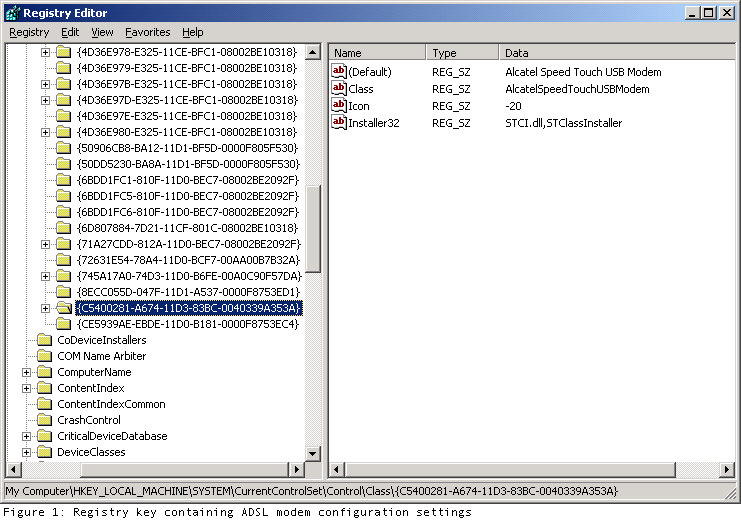
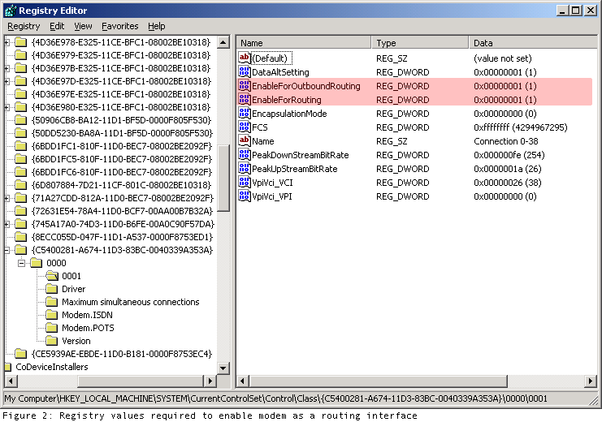

Dylan Beattie, August 2002
This document describes a number of highly dubious practices, including editing your computer's registry. You can do some serious damage, even destroy your system and have to re-install Windows. I accept no responsibility or liability for any damage occurring as a direct or indirect result of the information supplied here. Microsoft would advise you not to do this. Alcatel would advise you not to do this. Your ISP would advise you not to do this. I did it anyway, and it works for me. If it doesn't work for you - too bad. Not my problem. If you lose your MP3 collection, your car and your house - too bad. Again, not my problem. You have been warned. If you want to do this safely and properly, buy an ADSL router.
Windows 2000 includes a Routing & Remote Access service, allowing you to configure a Windows 2000 box as a router. The Alcatel SpeedTouch USB ADSL modem (aka the 'frog' or 'stingray' modem) is a fairly common ADSL modem, supplied with many home ADSL installation packages.
Before I had ADSL installed, I used Windows 2000 RRAS in conjunction with a standard 56K dial-up modem to provide shared internet access to the three computers on my home network. After upgrading to ADSL, this worked fine until version 1.4 of Alcatel's modem drivers, in which they explicitly disabled this capability.[1] Coincidentally, this was around the time their first dedicated ADSL routers became available. This meant I had to resort to using Windows' built-in 'Internet Connection Sharing', which has numerous shortcomings:
After weeks of hunting and experimenting, I found this post in Google's newsgroup archive, describing the registry changes that are required to enable the ADSL modem as a routing interface.
I've tested this with the version 1.6 drivers under Windows 2000 Server, and it works. Other driver versions or operating systems may or may not work - again, if it doesn't work for you, try something else..
HKEY_LOCAL_MACHINE\SYSTEM\CurrentControlSet\Control\Class for the ClassID entry that corresponds to your SpeedTouch ADSL modem (figure 1). This varies from system to system, so you'll have to go through the ClassID entries checking the descriptions for each of them.


Your ADSL router is now a valid routing interface, and can be defined as such under Windows 2000 Routing & Remote Access. Configuring this service is beyond the scope of this document - Control Panel =» Administrative Tools =» Routing & Remote Access, right-click on your server in the left-hand pane and click 'Configure and Enable Routing & Remote Access' should get you started. Follow the defaults for a NAT internet router and you should be in business. See the Windows 2000 Help for more information - the help on RRAS is actually quite comprehensive and usually very helpful.
Documentation copyright © Dylan Beattie 2002 except where indicated.
Permission is granted to copy, distribute and/or modify this documentation under the terms of the GNU Free Documentation License, Version 1.1 or any later version published by the Free Software Foundation; with no Invariant Sections, no Front-Cover Texts and no Back-Cover Texts.